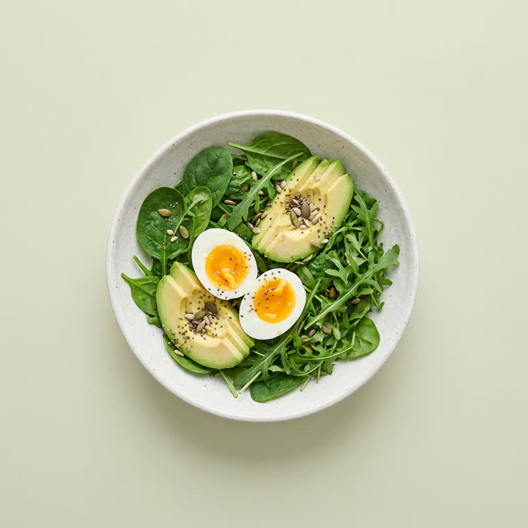
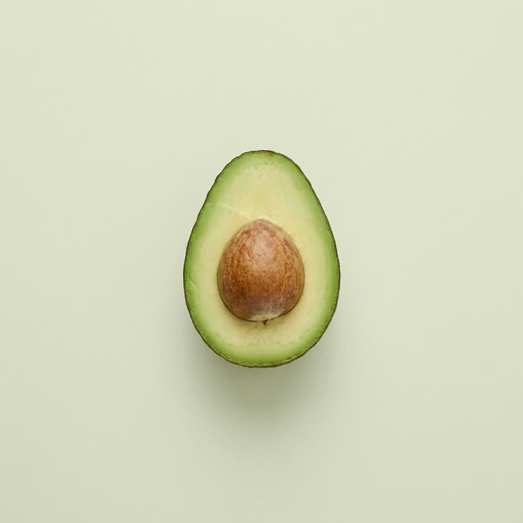
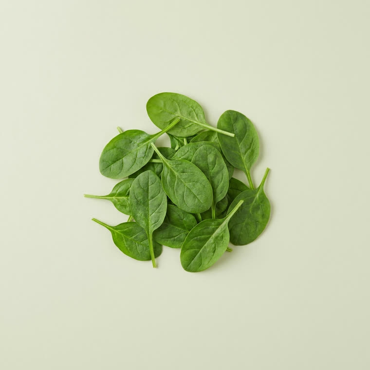
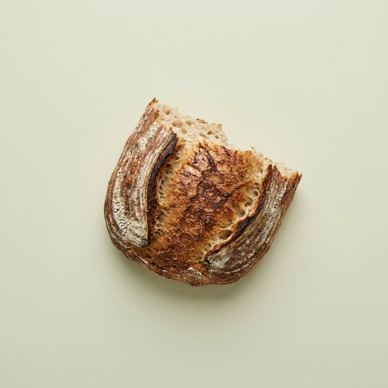
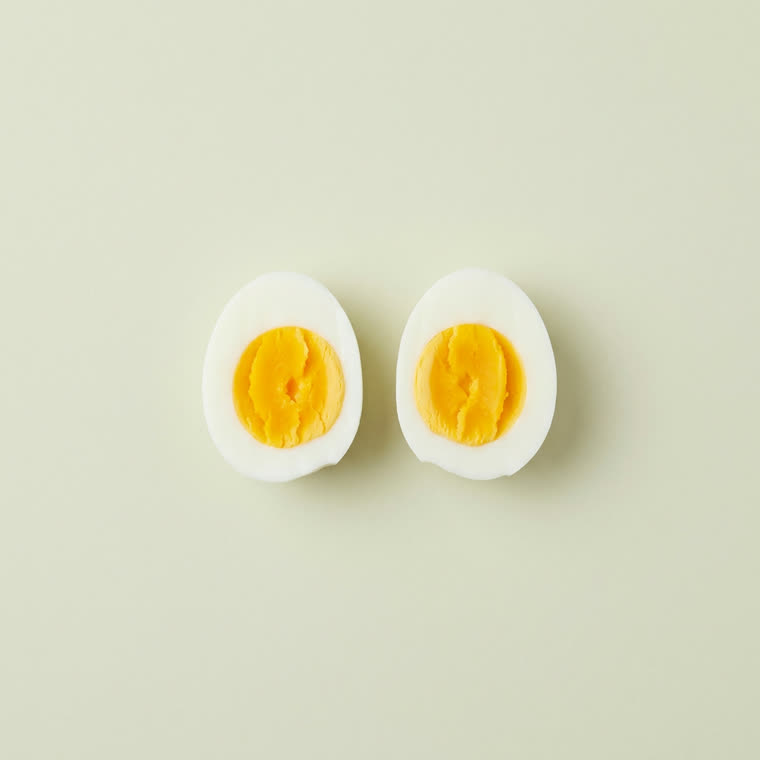
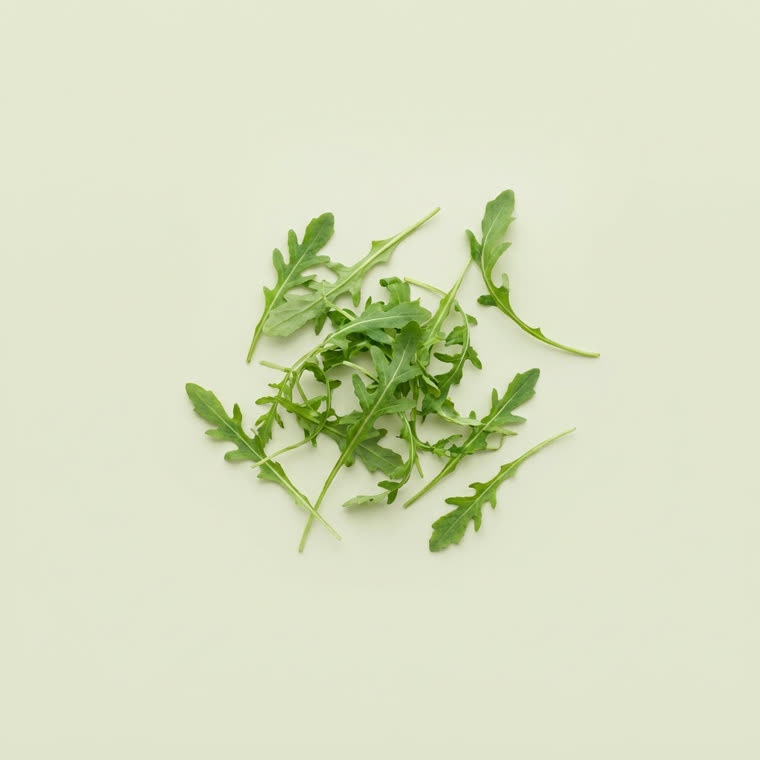
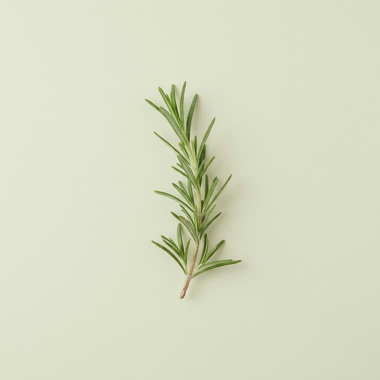

( CUISINE VERTE — LUXEMBOURG )
VERDE

DES ASSIETTES QUI POUSSENT — PAS QUI PÈSENT. (APERÇU)
( 01 ) — CE QU'IL Y A DEDANS
LE BOL, OUVERT.






DÉFILEZ — LE BOL S'OUVRE (VALEURS FICTIVES)

( 03 ) — LE LIEU
PLANTES, BOIS CLAIR, SOLEIL — ADRESSE À COMPLÉTER, LUXEMBOURG
ON VOUS
PRÉPARE ÇA.
COMMANDER ↗
COMMANDE EN LIGNE · RETRAIT EN 15 MIN · (APERÇU — FLUX À RELIER)